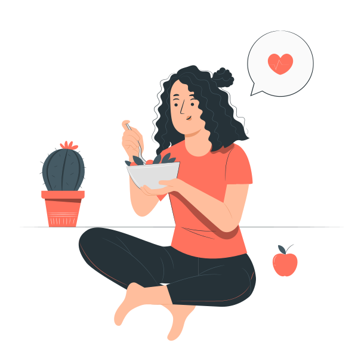

Who am i?
Hello, I'm Mariyam. Currently, I'm freshman student of cybersecurity faculty at AITU. Eventhough, I'm not proffessional dieterian, I have great interest in building habits, which will help to live fulfilled long life.

My daily meal plan includes three main courses and one snack in-between to keep you feeling satisfied all day long. You'll also get plenty of fiber from whole grains, fruits, vegetables, and legumes. This daily plan recommended for people trying to lose weight in long-term condition gradually.
💭What's a 'balanced meal'?
Who am i?
| Macronutrients, that you'll get: | |||
| Protein (g) | Carbohydrates (g) | Fat (g) | Calories |
|---|---|---|---|
| Breakfast | |||
| 27 | 63 | 23 | 555 |
| Lunch | |||
| 44 | 37 | 9 | 425 |
| Mid-Snack | |||
| 6 | 25 | 5 | 157 |
| Dinner | |||
| 42 | 77 | 8 | 646 |
| Total calories: 1783 cal | |||
Breakfast
- One grapefruit
- Two poached eggs (or fried in a non-stick pan)
- Two slices whole-grain toast with one pat of butter each
- One cup low-fat milk
- One cup of black coffee or herbal tea
Lunch
- Chicken breast (6-ounce portion), baked or roasted (not breaded or fried)
- Large garden salad with tomato and onion with one cup croutons, topped with one tablespoon oil and vinegar (or salad dressing)
- Glass of water
Mid Snack
- One cup carrot slices with three tablespoons hummus
- One-half piece of pita bread
- Glass of water or herbal tea
Dinner
- One cup steamed broccoli
- One cup of brown rice
- Salmon (four-ounce portion)
- Small garden salad with one cup spinach leaves, tomato, and onion topped with two tablespoons oil and vinegar or salad dressing
- Sparkling water with lemon or lime slice
Tips:
-
💦Drink more pure water.
-
Banal advice, we understand, but the heaters or air conditioners will turn on and your skin will start to give off more moisture, your throat will dry up and your cunning body will ask for carbohydrate drinks – lemonade, tea, coffee. He feels bad-sometimes cold, sometimes hot – and wants dopamines. Drink 1-2 glasses of water – and you will understand that the thirst is gone, as well as the desire to break the diet with a cup of latte.
-
⏰Do not drink while eating and try not to wash down the food.
-
You will eat more than planned, and later you will feel full, as the water stretches the walls of the stomach. Drink 15-20 minutes before a meal, this will just help to reduce the portion.
-
🍗Eat protein for dinner.
-
The evening meal should consist of easily digestible protein (fish, chicken, turkey, kefir) and fresh green vegetables. If you have not "overdone" carbohydrates during the day, then in the evening you can afford any salad that "fits" in the calorie content.
-
🍽Don't starve.
-
If you go hungry, you will slow down your metabolism and with a small calorie intake you can start to gain weight.
Any questions?
Don't hesitate and email me for further informationContact details
Email: mariyam12@gmail.comPhone number: +77082312132
Address:
Kazakhstan
Nur-sultan
Turkistan, 30